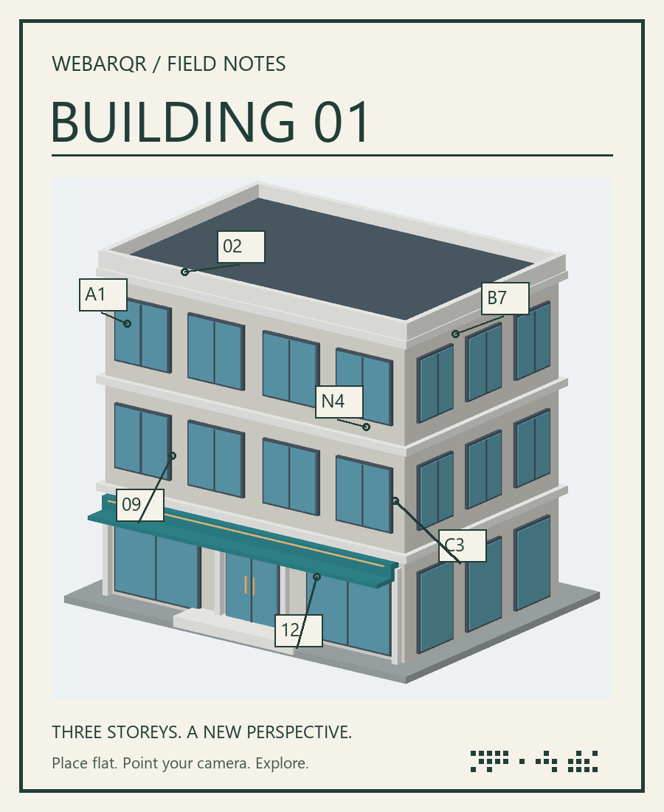

Your starting point.
Print this image or show it on a second screen. Place it flat, open the WebAR page on your phone, and point your camera at the entire image.


Keep the complete image visible. Bright, even light works best.
Print this image or show it on a second screen. Place it flat, open the WebAR page on your phone, and point your camera at the entire image.

Keep the complete image visible. Bright, even light works best.